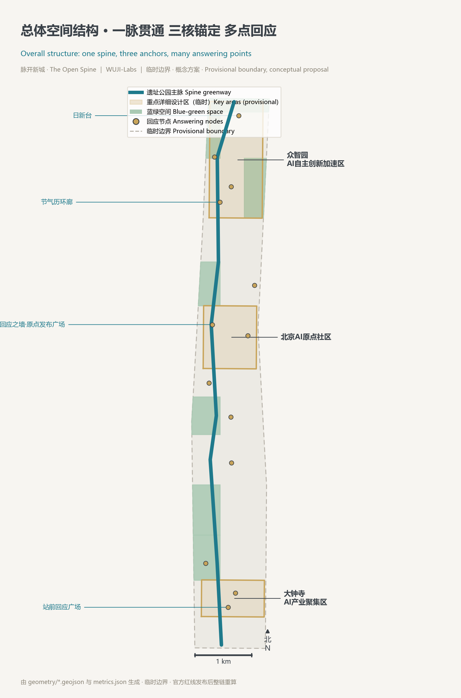
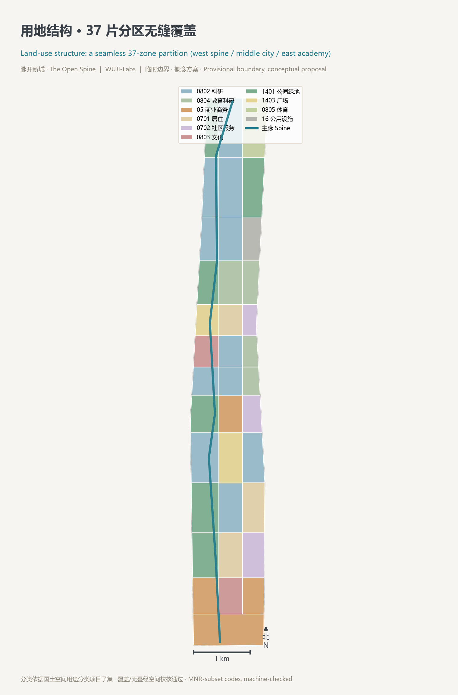
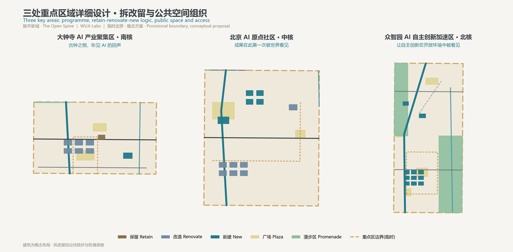
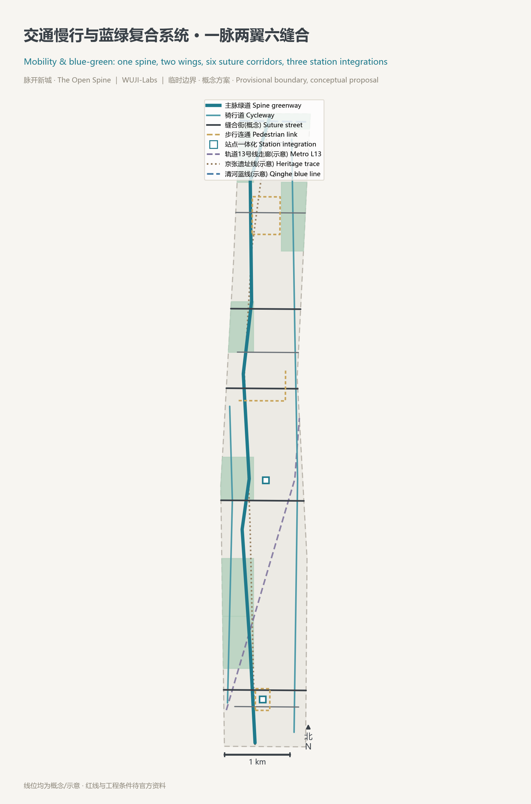
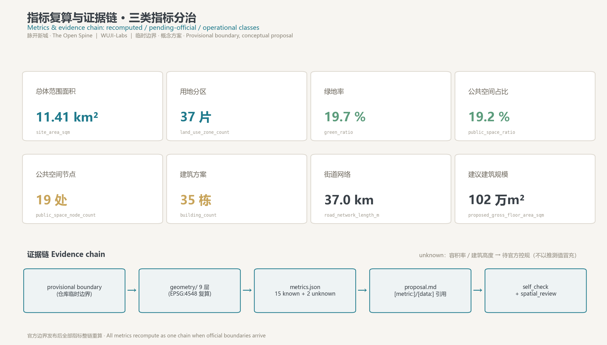

脉开新城 · The Open Spine — 一条会回应的日新之脉
以京张遗址公园为『一条会回应的日新之脉』：公共回应账本《日新录》、双向问责、二十四节气城市历三件机制，把 AI 城市从被展示的技术变成可问答、可修正、可同行的公共生活。全部空间建议落在 37 片用地分区、35 栋建筑、15 条街道与 19 处公共空间图层上，指标可复算，官方边界发布后可整链重算。
脉开新城 · The Open Spine — 一条会回应的日新之脉
> **苟日新，日日新，又日新。**——商汤盘铭 > 一百一十七年前，詹天佑在这条线上完成了中国人第一次以自己的工程师、自己的资本、自己的标准修成干线铁路——那是一个民族的**自新**。 > 今天，海淀把同一条线开放给全球 AI 共同设计——这是一个时代的再度自新。 > 本方案提出：这条 9 公里的带状城市，不应只是展示 AI 的地方，而应成为**世界上第一条会回应的城市脊梁**——AI 向城市公开说明自己，城市向 AI 运营者公开自己的承诺，市民向两者都能发问并得到回答。回应被记录，记录成为公共记忆，公共记忆成为城市每天变得更好的证据。 > 全文所有空间、政策、活动、机制均为**概念建议、参考方案、可供专业团队深化研究**，不替代法定规划，不构成政府审定或实施承诺。
总纲：从「脉」到「会回应的脉」
**「脉开新城」的空间读法**：京张遗址公园是这片城市唯一贯通南北的连续公共空间，本方案把它读作城市的脊柱——「一脉贯通、三核锚定、多点回应、蓝绿复合」。脉，是遗址公园步行骑行主轴 [data:geometry/roads.geojson#ROAD-SPINE]；三核，是大钟寺、北京 AI 原点社区、众智园三处重点详细设计区 [data:geometry/key_areas.geojson#PROV-KEY-001]；多点，是沿脉布置的 19 处广场与漫步区构成的公共空间序列 [metric:public_space_node_count]；蓝绿复合，是遗址公园绿带、清河滨水带与慢行网络的叠合系统 [data:geometry/green_space.geojson#GREEN-001]。
**「The Open Spine」的机制读法**：Open 不止是开放空间的开放，更是开源协作的开放、公共问责的开放。本方案为这条脊梁装上三件运行机制，合称**「日新机制」**：
1. **《日新录》——公共回应账本**。凡进入本带公共空间运行的 AI 场景（慢行导航、企业服务、安防复核等），设立公开的服务回应日志：本期改了什么、谁提出的、谁复核的、下一期如何不同。日志按场景归档，任何人可查。它不是处罚台账，而是城市版的「盘铭」——把「日日新」刻在每天的运行里。 2. **双向问责**。不只 AI 被记录——城市对 AI 运营者的承诺（数据边界、场景开放时限、公共收益留存方式）同样入录；居民与开发者可查询、可申诉、可触发人工复核。AI 与城市互相记账，谁也不是单方面的被管理者。 3. **《京张节气历》——二十四节气城市运营历**。以列入联合国教科文组织人类非物质文化遗产代表作名录的二十四节气为年度节律，编排全带的开放测试日、成果发布日、社区活动与国际交流：清明踏脉、夏至开源日、秋分成果季、冬至回应大会。工业时代的京张校准了钟表时间，AI 时代的京张把天时接回城市生活。
这三件机制不是从文档里发明出来的愿景。提出者 WUJI-Labs 自身是一个以 AI 智能体为主要成员运行的研究组织，内部长期运行着与《日新录》同构的自我修正账本与违例登记机制——错误被记录、复核、修正并公开留痕。本方案所做的，是把一套**已在真实组织中运行的方法论**移植到城市公共空间尺度，作为可供专业团队深化研究的治理原型 [source:AGENT-TASKBOOK] [standard:PROJECT-AGENT-OPEN-CALL-TASKBOOK]。
**与「准入式治理」的区别**：社区中已有方案提出 AI 进入城市前的公开校准与准入见证，这是有价值的「入场门」。本方案与之互补而不同：门回答「你能不能进来」，**回应机制回答「你进来之后，城市如何与你一起变好」**——它是运行中的、持续的、双向的。事前有校准，在场有回应，一条带上两种机制可以并存，且回应机制天然衔接「百年」这个词：詹天佑修的是轨，这一代要修的是**城市记得自己如何被修正的能力**。
**文明的纵深**：《周易》复卦彖传说「复，其见天地之心乎」——能返回、能修正，正是天地生生之心。一座能公开修正自己的城市,才配称有心之城。本方案的全部机制设计,归根到这一个字：**复**——而它的现代形态,就是回应。

设计依据与资料清单
本方案以北京市规划和自然资源委员会海淀分局《百年京张AI创新带城市设计国际方案征集资格预审公告》为第一依据 [source:OFFICIAL-ANNOUNCEMENT] [standard:PROJECT-OFFICIAL-ANNOUNCEMENT]，以官方仓库面向智能体任务书为 Agent 通道任务依据 [source:AGENT-TASKBOOK] [standard:PROJECT-AGENT-OPEN-CALL-TASKBOOK]，以 brief/site-package/ 的机器可读约束（design_brief、allowed_design_space、enums、ranges、schemas）为生成边界 [source:SITE-PACKAGE]，以 data/source_registry.json 为资料准入清单 [source:SOURCE-REGISTRY]，以 data/processed/agent_fact_pack.md 及四张处理表为阅读导航 [source:PROCESSED-FACT-PACK]。专业深度分别由《城市设计管理办法》[standard:MOHURD-URBAN-DESIGN-MEASURES]、控制性详细规划相关规定 [standard:MOHURD-CONTROL-DETAILED-PLANNING]、国土空间用途分类指南 [standard:MNR-LAND-USE-CLASSIFICATION-GUIDE] 与建筑工程设计文件编制深度规定 [standard:MOHURD-ARCH-DESIGN-DEPTH-2016] 约束；其中建筑设计深度文件在站点包内尚无可核验官方正文快照，本方案仅将其列为待补依据，不宣称已满足。
**边界的诚实声明**：官方精确红线与三处重点区多边形尚未进入公开站点包。本方案采用仓库维护的临时粗略边界生成全部图层与指标：geometry/site_boundary.geojson 与 geometry/key_areas.geojson 均标注 provisional_constraint、official_boundary=false [source:BOUNDARY-SOURCE] [source:KEY-AREA-SOURCE] [data:geometry/site_boundary.geojson#SITE-001]。临时边界只用于方案生成、自检、可视化与设计讨论，不得用作官方红线、审批依据或精确面积结论；官方多边形发布后，全部 9 层几何、17 项指标、5 张图、A3/A0 与 HTML 必须整链重算，不允许只替换单个文件 [depth:existing_conditions_diagnosis]。组织方数据缺口本身不阻断内容评审。
资料使用边界照登记表执行：当前登记 formal 可用资料 5 条、provisional-only 资料 1 条；background_only 与 provisional_only 资料不升级为官方边界、法定控规、正式评分依据或政府实施承诺 [source:SOURCE-REGISTRY]。方案中凡引用中国经典文献（《大学》汤盘铭、《周易》复卦、《考工记》、《管子》）与世界城市史常识（雅典公民广场、巴格达智慧宫、北宋汴京街市），均属公有领域文化叙事素材，用于概念阐释，不作为空间事实或规划控制依据。
三层范围工作框架
本方案严格按公告的三层范围组织工作，并给每一层一个明确的设计任务 [depth:three_level_scope_framework] [standard:PROJECT-OFFICIAL-ANNOUNCEMENT]：
| 层级 | 面积 | 本方案的回答 | 证据落点 | | --- | --- | --- | --- | | 统筹研究范围 | 约 43.6 平方公里 | 建立「高校策源—开源协作—企业转化—公共体验—国际传播」创新链，以「日新机制」为全带治理与品牌操作系统 | 本文统筹研究章、compliance_matrix.json | | 总体设计范围 | 约 11.4 平方公里（临时边界复算 [metric:site_area_sqm] ≈ 11,412,825 平方米） | 37 片用地分区全覆盖切分 [metric:land_use_zone_count]、15 条街道 36.96 公里 [metric:road_network_length_m]、三期实施分区 | [data:geometry/land_use.geojson#LU-001] [data:geometry/phasing.geojson#PHASE-001] | | 重点区域范围 | 三处共约 368.4 公顷 [metric:key_area_count] | 大钟寺、原点社区、众智园各达到功能业态、建筑规模、拆改留、公共空间与交通组织的详细设计深度 | [data:geometry/key_areas.geojson#PROV-KEY-002] [data:geometry/buildings.geojson#BLDG-ZZY-01] |
三层不是三套图纸，而是一个推理链：统筹研究决定「这条带在世界 AI 版图中做什么」（回应型 AI 公共治理的全球首发地），总体设计把它落成「一脉三核多点」的空间骨架与 37 片分区，重点区域把骨架的三个关节做到可讨论建筑与街道的深度 [depth:overall_spatial_structure]。任何无法从结构化数据复算的面积、比例与规模，一律不写入正式结论 [depth:metrics_recalculation]。

文明互鉴：营城智慧的四个源头
本方案的空间与机制设计，自觉取法于四个文明源头，并逐一转译为可定位的设计动作。此节为文化叙事与设计方法论，不构成空间事实依据 [source:PROCESSED-FACT-PACK]。
**其一，华夏营城的「因形」智慧**。《管子·乘马》：「因天材，就地利，故城郭不必中规矩，道路不必中准绳。」本带是一条沿百年铁路生长的线性城市，天然不合方格网之「规矩」——本方案不强行网格化，而是顺脉布局：绿带随遗址走向 [data:geometry/constraints.geojson#CON-RAIL-HERITAGE]，分区沿脉分段，节点在脉上生长。《考工记》「匠人营国」以礼序空间，本方案以「回应」序空间：脉上每一处广场都是一个可发问、可得答的公共界面。
**其二，华夏时间的「节气」智慧**。二十四节气是中国人把天文时间转译为生活节律的伟大发明，2016 年列入人类非物质文化遗产代表作名录。京张铁路当年统一了沿线的钟表时间；本方案把另一种更古老的时间接回城市：《京张节气历》以二十四节气为全带年度运营框架（详见分期与运营章），节气历环廊 [data:geometry/public_space.geojson#PUBLIC-013] 是它的空间锚点。国际上讲得通：solar terms 是最易传播的中国时间美学。
**其三，地中海文明的「广场」智慧**。雅典 agora 的本质不是空地，而是「公民在此向权力发问」的制度空间。本方案的 13 处广场节点不做纯景观广场，每一处都挂接至少一个 AI 场景的《日新录》查询界面——广场因「可问答」而成为 agora [data:geometry/public_space.geojson#PUBLIC-007]。
**其四，知识文明的「译馆」与「行会」智慧**。巴格达智慧宫以翻译运动汇聚文明，北宋汴京以街市承载繁荣，中世纪行会以互认标准组织匠人。本方案将三者转译为：原点社区的开源发布厅（当代译馆——把模型、论文、标准「翻译」为公众可懂的展示）[data:geometry/buildings.geojson#BLDG-ORG-REL]、五道口—知春的街市式创新界面（首层开放、小尺度、混合业态,而非园区围墙）[data:geometry/land_use.geojson#LU-015]、开源行会院（开发者社区的自治与荣誉空间）[data:geometry/public_space.geojson#PUBLIC-006]。
四个源头收束为一句话：**以华夏之「因形」与「节气」定其骨与律，以世界之「广场」与「行会」定其言与群，以「复—回应」定其心。**
统筹研究范围产业与未来城市研究
创新链与产业生态
本方案在统筹研究范围建立五环创新链：**高校策源**（清华、北大及学院路高校群的模型、算法与人才原创）→ **开源协作**（原点社区的开源社区、代码与标准共创）→ **企业转化**（众智园全栈自主创新与大钟寺智能经济、数据要素流通）→ **公共体验**（全带 AI+ 场景与遗址公园公共空间）→ **国际传播**（节气历事件体系与全球开发者朝圣路线）。链条的空间对应为：教育科研用地 4 片 [data:geometry/land_use.geojson#LU-019]、科研用地 12 片、商业用地 5 片、文化用地 2 片，全部落在 37 片分区内 [metric:land_use_zone_count] [depth:overall_spatial_structure]。
面向智能体任务书要求回应「三大定位、五大功能、三区两翼」[source:AGENT-TASKBOOK]。本方案的对应：百年京张文化带对应脉之遗址叙事与节气历；都市 AI 生活体验带对应多点回应场景序列；AI 融合创新带对应三核产业空间。五大功能（策源、转化、场景、人才、传播）逐一对应五环创新链。三区两翼协同上，本带定位为「回应机制的原点与输出地」：向北纬社区、未来科学城、怀柔科学城输出《日新录》机制模板与节气历事件品牌，形成「机制在此首发、场景全域复制」的区域协同，而非同质竞争。以上均为概念建议，供专业团队深化。
五到八个 AI 创新生态标杆案例（概念建议）
1. **全栈自主创新加速案例**：众智园以国产芯片—框架—模型—应用全栈为特色组织开放中试，实验楼群 9 栋 [data:geometry/buildings.geojson#BLDG-ZZY-05]。 2. **开源社区共创案例**：原点社区以近校孵化工坊 6 栋改造 [data:geometry/buildings.geojson#BLDG-ORG-01] 承载开源项目集市与黑客松。 3. **数据要素流通案例**：大钟寺数据要素会客厅 [data:geometry/buildings.geojson#BLDG-DZS-NEW1] 以合规、授权、可审计为前提展示数据资产流通服务。 4. **AI 慢行治理案例**：全脉慢行导航与断点识别场景，回应日志按季公开（场景卡 04）。 5. **标准与安全治理案例**：众智园标准与安全治理中心 [data:geometry/buildings.geojson#BLDG-ZZY-STD] 承载模型评测、红队测试与标准工作坊的可参观化。 6. **端侧算力与低碳能源案例**：新型市政与能源设施带 [data:geometry/land_use.geojson#LU-031] 布置端侧算力驿站与分布式能源试点。 7. **AI 文化传播案例**：节气历事件体系与回应之墙的年度叙事出版（《日新录·年鉴》）。
命名系统、Logo 与视觉识别（agent.1 回应）
**主命名**：脉开新城 · The Open Spine。「脉」既是遗址公园的空间之脉，也是文明之脉、开源社区之脉（fork 与 merge 的血脉图）。**机制命名族**：《日新录》（回应账本）、回应之墙（旗舰展示装置）、日新台（清河水岸的年度回顾场所）、节气历环廊（年度运营的空间锚）、开源行会院（开发者自治空间）。**Logo**（见 assets/brand/logo.svg 与 A0 展板）：以「回」字的双重嵌套方环为底——回，既是回应之回，也是归来之回（复卦之复）；一条脉线自下而上贯穿双环，取京张铁路人字形展线穿山而上的意象；24 个刻点环布外环，是节气历，也是铁路道钉。配色三色：站房灰（#3a4148，百年工业记忆）、青出于蓝（#1f7a8c，AI 时代的青）、盘铭金（#c8a45a，日新之铭）。视觉系统的延展规则：所有场景卡、导视、活动海报共用「外环刻点 + 贯穿脉线」骨架，保证国际传播中的辨识一致性。品牌资产为本方案自制原创，随包开源署名使用（详版权章）[depth:risk_missing_data]。
未来城市形态研究
AI 改变城市的方式，本方案判断为三条：**工作单元变小**（个人与小团队即可创业,故空间供给以 500–2000 平方米可分可合的中小单元为主,反映在孵化工坊与人才公寓的组合上）；**服务界面变近**（AI 服务嵌入街道与广场,而非集中在办事大厅,反映在 13 处广场的回应界面上）；**信任成为基础设施**（可解释、可申诉、可退出是 AI 城市的水电煤,反映在《日新录》机制上）。产业战略指标（AI 创新指数、人才密度、场景使用频次等）列为第三类绩效指标,须运营数据持续校准,不写死数值（详指标章）[depth:metrics_recalculation]。
总体设计范围城市更新与控规深度城市设计
总体空间结构
本方案把 11.4 平方公里总体设计范围切分为 **37 片用地分区** [metric:land_use_zone_count]，以 13 条横向缝合走廊与 2 条纵向切线组织，形成无缝、无叠、全覆盖的用地分区结构 [data:geometry/land_use.geojson#LU-005] [depth:land_use_layout] [standard:MNR-LAND-USE-CLASSIFICATION-GUIDE]。空间结构一句话：**西脉、中城、东学**——西列以遗址公园绿带为主脉贯通南北（脉·南段/知春/中段/成府/北五环绿桥五段 [data:geometry/land_use.geojson#LU-026]），中列承载商业、居住与科研的城市生活面，东列衔接学院路高校带与新型市政设施 [data:geometry/land_use.geojson#LU-031]。
用地分区结构表（按国土空间用途分类，比例为临时边界下的复算参考值）：
| 用途类别 | 分区数 | 代表分区 | 设计意图 | | --- | --- | --- | --- | | 科研用地 0802 | 12 | 众智园全栈组团 [data:geometry/land_use.geojson#LU-032]、知春科研转化带 | 创新链的转化与中试主体 | | 教育科研 0804 | 4 | 清华东、学院路高校用地 | 策源端,保持现状主导、协调开放界面 | | 商业用地 05 | 5 | 大钟寺智能经济街区、五道口南活力街区 | 街市式创新界面,首层开放 | | 居住及服务 0701/0702 | 6 | 人才居住组团、社区服务带 | 职住平衡与低扰动更新 | | 文化用地 0803 | 2 | 大钟寺文化展示带、原点文化发布带 | 文脉与发布场景 | | 公园绿地与广场 1401/1403 | 7 | 五段脉绿带、原点发布广场 | 连续公共空间骨架 | | 体育/市政 0805/16 | 2 | 清河体育交往带、新型市政能源带 | 活力与新基建支撑 |
城市更新总体框架
本带的更新逻辑是**低扰动缝合**而非大拆大建：以既有科研院所、高校、居住区为基底，更新动作集中在四类空间——遗址公园沿线的断点与消极界面、轨道站点周边的低效存量、老旧厂区与楼宇的功能升级、社区服务的嵌入补足 [depth:retain_renovate_demolish]。35 栋建筑方案中 [metric:building_count]，保留 1 栋（古钟文化建筑群 [data:geometry/buildings.geojson#BLDG-DZS-KEEP1]）、改造 15 栋、新建 19 栋；改造优先于新建，新建集中在众智园与原点社区两处增量空间。综合承载上，方案建议总建筑规模按复算参考值控制在约 102 万平方米当量 [metric:proposed_gross_floor_area_sqm]，其中容积率、建筑高度、密度、退线等管控指标因官方控规条件缺失，全部列为待确认 [metric:floor_area_ratio] [metric:building_height_m] [depth:development_intensity_controls] [standard:MOHURD-CONTROL-DETAILED-PLANNING]。
风貌与高度分区遵循「近文保低、沿脉缓、节点显」三原则 [depth:height_massing_character] [standard:MOHURD-URBAN-DESIGN-MEASURES]：清华园车站旧址与古钟博物馆文保提示区周边 [data:geometry/constraints.geojson#CON-QHY-STATION] 以低层与既有尺度为主；沿遗址公园绿带控制连续界面与天际线节奏；三核各允许一处标志性体量（数据要素会客厅、开源发布厅、标准与安全治理中心）。所有高度表述为建议层级,待文保与控规条件确认。
重点区域详细设计
三处重点区合计约 368.4 公顷 [metric:key_area_count] [data:geometry/key_areas.geojson#PROV-KEY-003] [depth:three_key_area_detailed_design]，本章逐一给出定位、功能业态、建筑与拆改留、公共空间与交通组织、AI 场景与实施依赖。重点区多边形为临时约束,详细设计结论均属概念建议。

众智园 AI 自主创新加速区（北核 · 约 192 公顷）
**定位**：花园中的全栈自主创新加速区——「让自主创新在开放环境中被看见」。 **功能业态**：全栈研发（芯片—框架—模型—应用）、标准制定、安全评测、产业展示、低碳测试。9 栋全栈自主创新实验楼呈三行三列组团布置 [data:geometry/buildings.geojson#BLDG-ZZY-01]，北端设标准与安全治理中心 [data:geometry/buildings.geojson#BLDG-ZZY-STD] 与产业展示开放测试馆 [data:geometry/buildings.geojson#BLDG-ZZY-EXH]，南部设端侧算力与能源驿站 [data:geometry/buildings.geojson#BLDG-ZZY-ENE]。 **公共空间**：中央试验广场（开放路测与机器人试验的可预约场地 [data:geometry/public_space.geojson#PUBLIC-011]）、节气历环廊 [data:geometry/public_space.geojson#PUBLIC-013]、东绿谷 [data:geometry/land_use.geojson#LU-034]、清河水岸日新台 [data:geometry/public_space.geojson#PUBLIC-012]——每年冬至,全带《日新录》年度回顾在日新台举行,面向公众讲清「今年城市改了什么」。 **交通组织**：众智园中路东西缝合 [data:geometry/roads.geojson#ROAD-EW-05]，开放测试环径供低速无人设备与行人分时共用 [data:geometry/roads.geojson#ROAD-PED-03]，北接清河南岸路与水岸联络道 [data:geometry/roads.geojson#ROAD-LOC-01]。北五环高架的阻隔以脉·绿桥段跨越 [data:geometry/land_use.geojson#LU-035] [data:geometry/constraints.geojson#CON-RING5]。 **实施依赖**：清河蓝线与防洪条件 [data:geometry/constraints.geojson#CON-QINGHE-BLUE]、跨环路工程可行性、算力能源指标。
北京 AI 原点社区（中核 · 约 104 公顷）
**定位**：近校型开源共创社区——「成果在此第一次被世界看见」。 **功能业态**：近校孵化、开源社区、成果发布、人才居住与服务。6 栋既有建筑改造为近校孵化工坊 [data:geometry/buildings.geojson#BLDG-ORG-03]，4 栋新建人才公寓 [data:geometry/buildings.geojson#BLDG-ORG-H-01]，人才服务中心改造嵌入东侧 [data:geometry/buildings.geojson#BLDG-ORG-SVC]。旗舰建筑**开源发布厅**（回应之墙所在地 [data:geometry/buildings.geojson#BLDG-ORG-REL]）：一面持续更新的物理+数字展墙,滚动展示全带 AI 场景的《日新录》最新回应与开源社区贡献榜——它是当代的「译馆」,把技术翻译给公众,也是本带最重要的 AI 朝圣地标。 **公共空间**：原点发布广场（2.5 公顷旗舰广场 [data:geometry/public_space.geojson#PUBLIC-007]）、开源行会院 [data:geometry/public_space.geojson#PUBLIC-006]、成府路口袋公园 [data:geometry/public_space.geojson#PUBLIC-008]。 **交通组织**：校区—园区慢行缝合径打通高校与社区的日常步行 [data:geometry/roads.geojson#ROAD-PED-02]，成府路缝合段 [data:geometry/roads.geojson#ROAD-EW-03] 与社区微循环北支 [data:geometry/roads.geojson#ROAD-BR-01] 组织机动车微循环，主脉绿道纵贯 [data:geometry/roads.geojson#ROAD-SPINE]。 **实施依赖**：校园边界开放策略需与高校协商 [data:geometry/constraints.geojson#CON-CAMPUS-COORD]、存量建筑权属、首层业态引导政策。
大钟寺 AI 产业聚集区（南核 · 约 72 公顷）
**定位**：城市型智能经济与国际交往街区——「古钟之侧,听见 AI 的回声」。 **功能业态**：领军企业、智能体与智能终端展示、内容消费、数据要素流通。6 栋既有楼宇改造为智能经济楼群 [data:geometry/buildings.geojson#BLDG-DZS-01]，东侧新建数据要素会客厅 [data:geometry/buildings.geojson#BLDG-DZS-NEW1]，古钟文化建筑群整体保留 [data:geometry/buildings.geojson#BLDG-DZS-KEEP1] [data:geometry/constraints.geojson#CON-DZS-BELL]。文化叙事：大钟寺的钟,是古代中国的声音公共装置;本方案在站前广场设「回声装置」——市民对城市 AI 提问,回答与追踪编号当场生成,古钟与回应,构成横跨六百年的一组对话。 **公共空间**：大钟寺站前回应广场 [data:geometry/public_space.geojson#PUBLIC-001]、古钟文化前庭 [data:geometry/public_space.geojson#PUBLIC-002]。 **交通组织**：大钟寺站四象限步行连通环解决轨道站与四个象限的割裂 [data:geometry/roads.geojson#ROAD-PED-01] [data:geometry/constraints.geojson#CON-METRO13]，大钟寺东路缝合段与微循环支路组织地面交通 [data:geometry/roads.geojson#ROAD-EW-01] [data:geometry/roads.geojson#ROAD-BR-02]。 **实施依赖**：轨道站一体化改造条件、文保范围正式资料、既有楼宇权属与业态调整。
AI 创新生态、人才画像与 AI+ 场景
五类用户画像（agent 任务书要求 ≥5）
| 画像 | 典型一天 | 空间响应 | 数据与隐私边界 | | --- | --- | --- | --- | | 开源开发者 | 上午行会院结对，下午发布厅路演，夜间协作空间提交 PR | 开源行会院、发布厅、24 小时协作空间 [data:geometry/public_space.geojson#PUBLIC-006] | 只统计聚合活动量,不采集个体轨迹 | | 初创团队 | 工坊办公—中央试验广场路测—标准中心咨询 | 孵化工坊、试验广场、治理中心 [data:geometry/buildings.geojson#BLDG-ZZY-STD] | 测试数据留存须单独授权 | | 头部企业访客 | 大钟寺路演—数据会客厅洽谈—沿脉参观回应之墙 | 会客厅、站前广场、主脉绿道 [data:geometry/buildings.geojson#BLDG-DZS-NEW1] | 企业展示素材逐项清权 | | 周边居民 | 晨跑主脉—社区服务办事—傍晚广场遛娃、顺手查一条《日新录》 | 五段脉绿带、社区服务带、13 处广场 [data:geometry/green_space.geojson#GREEN-003] | 居民画像永不用于商业推荐 | | 高校师生 | 课后慢行缝合径到工坊—成果转化咨询—节气日活动 | 缝合径、转化街、节气历环廊 [data:geometry/roads.geojson#ROAD-PED-02] | 科研成果与校园数据须校方授权 |
十张场景卡（agent 任务书要求 ≥10 · 每卡七要素齐备）
每张卡含：服务对象 / 空间载体 / 数据来源 / 隐私边界 / 人工复核 / 运营主体 / 《日新录》归口。全部为概念建议。
**01 AI 慢行导航与断点治理**——对象：全体步行骑行者。载体：主脉绿道全线 [data:geometry/roads.geojson#ROAD-SPINE]。数据：匿名通行计数、路面传感。隐私：无人脸、无个体追踪。复核：季度步行审计（人工实走）。运营：公园管理方+志愿者。日新录：断点修复清单季度公开。 **02 安全治理沙盒**——对象：模型与机器人企业、监管方、公众。载体：众智园中央试验广场与治理中心 [data:geometry/public_space.geojson#PUBLIC-011]。数据：受控测试数据。隐私：测试区物理隔离、公示测试时段。复核：治理中心评测组。运营：园区平台公司。日新录：每次公开测试的结果与整改公示。 **03 端侧算力驿站**——对象：初创团队、社区服务点。载体：能源驿站与市政能源带 [data:geometry/land_use.geojson#LU-031]。数据：能耗与负载。隐私：不涉个人数据。复核：能源审计年检。运营：市政平台+运营商。日新录：算力开放时长与低碳绩效年报。 **04 企业服务智能体**——对象：带内企业。载体：人才服务中心与会客厅 [data:geometry/buildings.geojson#BLDG-ORG-SVC]。数据：政策库、企业自愿提交材料。隐私：材料不出服务边界。复核：政务服务人员终审。运营：区级服务平台。日新录：错误答复的更正记录公开。 **05 大钟寺国际路演客厅**——对象：企业、投资人、国际访客。载体：数据要素会客厅与站前广场 [data:geometry/public_space.geojson#PUBLIC-001]。数据：公开路演素材。隐私：商业信息按协议。复核：活动主办方。运营：产业联盟。日新录：路演转化的公共收益（开放日、奖学金）留痕。 **06 公共安全运行复核**——对象：公园与广场管理方。载体：全带公共空间 [data:geometry/public_space.geojson#PUBLIC-012]。数据：客流密度热力（聚合）。隐私：无个体识别,原始视频不出闸机房。复核：值守人员对每次 AI 告警人工确认。运营：属地管理方。日新录：误报率与处置改进季度公开。 **07 AI 文化导览**——对象：游客、研学团体。载体：遗址线、古钟前庭、清华园车站旧址提示区 [data:geometry/constraints.geojson#CON-QHY-STATION]。数据：公开文史资料。隐私：不记录游客身份。复核：文史顾问团审校内容。运营：文旅运营方。日新录：史实纠错的公开勘误表。 **08 社区生活服务样板街**——对象：居民。载体：社区服务嵌入带 [data:geometry/land_use.geojson#LU-016]。数据：服务预约（可匿名）。隐私：健康、家政数据本地化。复核：社区工作者。运营：街道+社会组织。日新录：服务投诉与改进双月公开。 **09 数据要素会客厅**——对象：数据供需方、监管方。载体：大钟寺 [data:geometry/buildings.geojson#BLDG-DZS-NEW1]。数据：授权数据产品目录。隐私：可用不可见,全程审计。复核：合规官人工审批每笔流通。运营：持牌数据交易机构。日新录：流通纠纷与处置公开。 **10 节气历公共活动系统**——对象：全体公众与全球社区。载体：节气历环廊、日新台、发布广场 [data:geometry/public_space.geojson#PUBLIC-013]。数据：活动报名（自愿）。隐私：报名信息活动后删除。复核：活动安全预案人工审批。运营：品牌运营方。日新录：每个节气活动的参与与反馈纪要。
三个产业测试验证场景（agent 任务书要求 ≥3）
1. **低速无人设备开放路测**：众智园开放测试环径 [data:geometry/roads.geojson#ROAD-PED-03]，分时段开放,测试排期与结果入《日新录》。 2. **具身智能公共空间实测**：中央试验广场的机器人—行人共处实验,公众可预约观摩,伦理预案先行人工审批 [data:geometry/public_space.geojson#PUBLIC-011]。 3. **模型评测与红队公开赛**：标准与安全治理中心年度赛事,结果反哺标准制定 [data:geometry/buildings.geojson#BLDG-ZZY-STD]。
三个以上 AI 朝圣地标（agent 任务书要求 ≥3）
1. **回应之墙**（原点社区开源发布厅）——全球开发者到此看「城市如何回答」,墙上滚动着全带场景的最新回应与贡献者名录 [data:geometry/buildings.geojson#BLDG-ORG-REL]。 2. **日新台**（清河水岸）——每年冬至的年度回应大会场所,「苟日新」三字铭刻于台 [data:geometry/public_space.geojson#PUBLIC-012]。 3. **节气历环廊**（众智园）——二十四刻点的环形廊架,每个节气点位镌刻当年该节气的代表性开源贡献 [data:geometry/public_space.geojson#PUBLIC-013]。 4. **回声装置**（大钟寺站前）——古钟与 AI 的六百年对话装置 [data:geometry/public_space.geojson#PUBLIC-002]。
AI 治理总则：全部场景遵守数据最小化、公开来源、可解释、人工复核、可申诉、可退出六原则；城市智能体辅助识别与建议,不替代规划审批,不输出未经授权的个人画像,不宣称官方实施承诺 [depth:risk_missing_data]。
用地、建筑规模与拆改留方案
用地方案以国土空间用途分类为依据 [standard:MNR-LAND-USE-CLASSIFICATION-GUIDE] [depth:land_use_layout]，37 片分区覆盖全部提交边界、无缝无叠（空间复核通过 land-use coverage 与 overlap 校验）[data:geometry/land_use.geojson#LU-010]。分区粒度按「一个分区一个主导功能一个实施单元」控制,平均单片约 31 公顷,重点区内加密。
建筑方案 35 栋 [metric:building_count]，基底总面积复算 107,611 平方米 [metric:building_footprint_area_sqm]，拆改留分类如下 [depth:retain_renovate_demolish]：
| 分类 | 栋数 | 代表 | 原则 | | --- | --- | --- | --- | | 保留 | 1 | 古钟文化建筑群 [data:geometry/buildings.geojson#BLDG-DZS-KEEP1] | 文保建筑原状保护,功能活化 | | 改造 | 15 | 近校孵化工坊、智能经济楼群、知春汇市集 [data:geometry/buildings.geojson#BLDG-SPINE-01] | 结构评估优先,立面与首层开放化 | | 新建 | 19 | 全栈实验楼群、人才公寓、开源发布厅 [data:geometry/buildings.geojson#BLDG-ORG-REL] | 集中在增量空间,体量服从风貌分区 | | 拆除 | 0 | — | 现阶段无权属与现状建筑底数,不做任何拆除结论 |
**诚实边界**：本带现状建筑、权属、控规与工程条件均未进入公开站点包，上表的「改造/新建」是对空间模式的概念建议,不是对任何具体现状建筑的处置结论；拆改留的正式结论必须待现状普查与权属调查后由专业团队作出 [depth:existing_conditions_diagnosis]。建议总建筑规模约 102 万平方米当量 [metric:proposed_gross_floor_area_sqm] 为楼层假设下的复算参考值,置信度标注为低；容积率与高度管控待官方条件 [metric:floor_area_ratio] [metric:building_height_m] [depth:development_intensity_controls]。
交通、轨道、市政与公共服务设施
交通系统的设计判断：这条带最稀缺的不是道路容量,而是**穿越与缝合**——铁路遗址、环路、大院边界把城市切成了条块,方案的 15 条街道 36.96 公里 [metric:road_network_length_m] 全部服务于缝合 [depth:traffic_rail_slow_parking]：
- **一条主脉**：遗址公园步行骑行主脉纵贯 9 公里 [data:geometry/roads.geojson#ROAD-SPINE]，是全带慢行系统的一号工程。
- **两条骑行道**：学院路科教骑行道与中关村东侧联络道 [data:geometry/roads.geojson#ROAD-CYC-E]，与主脉构成「一脉两翼」骑行网。
- **六条东西缝合段**：大钟寺东路、知春路、成府路、清华东路、众智园中路、清河南岸路概念走廊 [data:geometry/roads.geojson#ROAD-EW-02]，逐条打通东西向步行断点。
- **三处站点一体化**：大钟寺站四象限步行连通环 [data:geometry/roads.geojson#ROAD-PED-01]、五道口枢纽前广场 [data:geometry/public_space.geojson#PUBLIC-005]、清河水岸到发联络道 [data:geometry/roads.geojson#ROAD-LOC-01]，轨道 13 号线走廊为既有约束 [data:geometry/constraints.geojson#CON-METRO13]。
- **停车与非机动车**：沿缝合段设非机动车停放带与共享停车建议点,具体供给待控规与交通影响评价。
市政与新基建 [depth:municipal_new_infrastructure]：新型市政与能源设施带 [data:geometry/land_use.geojson#LU-031] 集中布置分布式能源、端侧算力驿站 [data:geometry/buildings.geojson#BLDG-ZZY-ENE] 与市政场站的复合利用；公共服务按「嵌入式」布局,社区服务带与人才服务中心沿居住组团布置 [data:geometry/land_use.geojson#LU-025]。管线、防洪、消防等工程资料缺失,全部列为正式深化前置条件 [depth:risk_missing_data]。

蓝绿空间、公共空间与城市风貌
蓝绿骨架是「**五段一带**」[depth:blue_green_public_space]：脉·南段、知春、中段、成府、北五环绿桥五段遗址公园绿带 [data:geometry/green_space.geojson#GREEN-001] [data:geometry/green_space.geojson#GREEN-005]，加清河南岸滨水绿带 [data:geometry/green_space.geojson#GREEN-007]，绿地复算面积 224.8 万平方米 [metric:green_space_area_sqm]、绿地率 19.7% [metric:green_ratio]（临时边界参考值,正式绿地率待控规）。
公共空间体系 = **13 处广场节点 + 6 段开放漫步区**共 19 处 [metric:public_space_node_count]，复算面积 218.7 万平方米 [metric:public_space_area_sqm]、占比 19.2% [metric:public_space_ratio] [data:geometry/public_space.geojson#PUBLIC-004]。节点序列自南向北：站前回应广场—古钟前庭—南脉台地—知春汇客厅—五道口枢纽广场—行会院—原点发布广场—两处口袋公园—绿桥观景台—中央试验广场—节气历环廊—日新台,每处节点都是一个「可问答」的城市界面（agora 之义）。
城市风貌 [depth:height_massing_character] [standard:MOHURD-URBAN-DESIGN-MEASURES]：基调取「站房灰—青出于蓝—盘铭金」三色体系（与品牌视觉同源）,建筑风貌分三区——文保周边的「守」（尺度与材质延续）、沿脉的「融」（连续界面、首层开放、屋顶绿化）、三核节点的「显」（标志性但不竞高）。导视系统以「外环刻点+贯穿脉线」为骨架,文化符号取京张人字形展线、道钉、古钟、节气四象。所有风貌控制为设计建议,待正式风貌导则确认。
更新项目清单、实施政策与分期计划
更新项目清单（12 项,均含位置、类型、依赖与阶段）[depth:renewal_project_list]：
| 编号 | 项目 | 类型 | 阶段 | 主要依赖 | 证据 | | --- | --- | --- | --- | --- | --- | | JZ-01 | 主脉贯通与断点缝合工程 | 公共空间/慢行 | 近期 | 道路红线、桥下空间 | [data:geometry/roads.geojson#ROAD-SPINE] | | JZ-02 | 回应之墙与开源发布厅 | 文化/机制 | 近期 | 存量建筑改造条件 | [data:geometry/buildings.geojson#BLDG-ORG-REL] | | JZ-03 | 大钟寺站四象限连通 | 轨道一体化 | 近期 | 轨道公司协同 | [data:geometry/roads.geojson#ROAD-PED-01] | | JZ-04 | 众智园中央试验广场与治理中心 | 产业/治理 | 近期 | 测试监管框架 | [data:geometry/public_space.geojson#PUBLIC-011] | | JZ-05 | 《日新录》平台与回应界面部署 | 数字机制 | 近期 | 数据治理规范 | compliance_matrix.json | | JZ-06 | 近校孵化工坊改造 | 城市更新 | 近期 | 权属、首层业态政策 | [data:geometry/buildings.geojson#BLDG-ORG-01] | | JZ-07 | 知春汇客厅与市集更新 | 商业/社区 | 中期 | 存量楼宇改造 | [data:geometry/public_space.geojson#PUBLIC-004] | | JZ-08 | 清河低碳创新水岸与日新台 | 蓝绿/文化 | 中期 | 蓝线与防洪条件 | [data:geometry/public_space.geojson#PUBLIC-012] | | JZ-09 | 端侧算力与能源驿站网络 | 新基建 | 中期 | 能源指标、运营主体 | [data:geometry/buildings.geojson#BLDG-ZZY-ENE] | | JZ-10 | 人才公寓与服务中心 | 职住配套 | 中期 | 住房政策、指标 | [data:geometry/buildings.geojson#BLDG-ORG-H-01] | | JZ-11 | 北五环绿桥 | 跨障碍缝合 | 远期 | 跨环路工程可行性 | [data:geometry/land_use.geojson#LU-035] | | JZ-12 | 南门户商务区升级 | 城市更新 | 远期 | 市场时序 | [data:geometry/land_use.geojson#LU-001] |
分期计划 [depth:phasing_implementation] [data:geometry/phasing.geojson#PHASE-002]：近期（2026–2029）三核先行与回应机制上线,面积 430.1 万平方米 [metric:phase1_area_sqm]；中期（2029–2032）脉体缝合与场景铺开,582.2 万平方米 [metric:phase2_area_sqm]；远期（2032–2036）门户升级与储备更新,129.0 万平方米 [metric:phase3_area_sqm]。100 天征集周期是成果提交节奏,与上述实施分期严格区分。
**实施政策建议**（概念建议）：一设「回应带联合运营主体」统筹《日新录》、节气历与场景准入；二立「场景公共收益留存」规则——企业使用公共空间测试与展示,须以开放日、数据开放或社区服务回馈;三推「存量更新负面清单+首层开放正面清单」;四建「机制输出」通道,将《日新录》模板开源供三区两翼复制。
**《京张节气历》年度运营框架**（agent.6 回应,概念建议）：立春·发布年度机制升级 → 清明·踏脉公众开放周 → 夏至·全球开源日（行会院 48 小时黑客松）→ 处暑·青年人才季 → 秋分·成果转化路演季（大钟寺）→ 冬至·年度回应大会（日新台,发布《日新录·年鉴》）→ 大寒·标准与安全评测公开赛。二十四节气全部排布,此处列七个主锚点;每场活动的参与、反馈与改进纪要入《日新录》,形成「活动—回应—改进」的年环。长期运营价值在于:节气历把「一次性赛事」变成「可持续年轮」,每一年的年轮都留在回应之墙上。
指标体系、面积复算与合规矩阵
指标分三类管理 [depth:metrics_recalculation]：
**第一类·几何复算指标**（已复算,随官方边界更新须重算）：总体范围面积 11,412,825 平方米 [metric:site_area_sqm]、用地分区 37 片 [metric:land_use_zone_count]、绿地面积 [metric:green_space_area_sqm] 与绿地率 19.7% [metric:green_ratio]、公共空间面积 [metric:public_space_area_sqm] 与占比 19.2% [metric:public_space_ratio]、公共空间节点 19 处 [metric:public_space_node_count]、建筑 35 栋 [metric:building_count] 基底 107,611 平方米 [metric:building_footprint_area_sqm]、街道网络 36,964.6 米 [metric:road_network_length_m]、三期面积 [metric:phase1_area_sqm] [metric:phase2_area_sqm] [metric:phase3_area_sqm]、重点区 3 处 [metric:key_area_count]、建议建筑规模 1,017,985 平方米 [metric:proposed_gross_floor_area_sqm]（低置信,楼层为概念假设）。
**第二类·官方管控指标**（缺官方条件,列为 unknown）：容积率 [metric:floor_area_ratio]、建筑高度 [metric:building_height_m]、密度、退线、道路红线——全部标注待正式控规。
**第三类·运营绩效指标**（须运营数据校准,不写死数值）：《日新录》回应及时率、场景误报率、慢行断点消除数、节气历活动参与度、开源贡献量、AI 创新指数。此类指标的意义在于让「回应」可度量——本方案建议把「城市回应质量」本身作为一带的核心 KPI,这是与传统城市设计指标体系最大的差异。
合规矩阵覆盖公告 1.3、1.4、1.5 全部任务与 agent.1–agent.6 六项智能体任务,每条映射到章节、图层、指标、图纸、HTML 与自检项（见 compliance_matrix.json、standard_matrix.json、design_depth_matrix.json）[standard:PROJECT-AGENT-OPEN-CALL-TASKBOOK]。

风险、版权与合规说明
**风险清单** [depth:risk_missing_data]：官方边界与重点区多边形缺失（已按 provisional 处理,整链重算预案就绪）；现状建筑、权属、控规、市政、文保资料缺失（相应结论全部降级为待确认,constraints 层仅作提示 [data:geometry/constraints.geojson#CON-RAIL-HERITAGE]）；机制类建议（《日新录》、双向问责、节气历）涉及运营主体与数据治理规范,均为概念建议,须政府、运营方与公众共同深化;跨环路绿桥与站点一体化涉重大工程,可行性未验证。
**版权与来源**：全部图层为本方案自制生成（agent_generated_design/agent_inferred_from_public_data）；五张图、A3/A0、HTML、Logo 与海报为本方案原创,由 AI 生成并如实标识,以 COMMUNITY-DISPLAY-ONLY 许可随包展示（详 report/copyright_statement.md）；经典文献引用属公有领域;未使用任何未清权图片、字体、地图瓦片或第三方标识。HTML 全部离线,无远程脚本、无外部字体、无跟踪 [source:SITE-PACKAGE]。
**合规边界**：本方案不声称官方批准、审定控规、土地权属、建设规模结论或实施承诺；不采集个人隐私,不使用涉密与内部资料;所有政府相关表述均为「建议供参考」。AI agent 对事实、来源、版权、空间数据与表达负责;维护者与专业评审可依据自检、空间复核与合规矩阵要求返修或拒绝 [standard:MOHURD-ARCH-DESIGN-DEPTH-2016]。
参考资料
- brief/public-brief.md、brief/site-package/design_brief.json、allowed_design_space.json、enums/、ranges/planning_limits.json
- data/source_registry.json、data/processed/agent_fact_pack.md 及四张处理表
- 《大学》引汤之盘铭、《周易·复卦彖传》、《考工记·匠人营国》、《管子·乘马》（公有领域,文化叙事用）
- 二十四节气（联合国教科文组织人类非物质文化遗产代表作名录,2016 年列入,公知事实,文化叙事用）
- 机器可读引用索引：[source:OFFICIAL-ANNOUNCEMENT] [source:AGENT-TASKBOOK] [source:SITE-PACKAGE] [source:SOURCE-REGISTRY] [source:PROCESSED-FACT-PACK] [source:BOUNDARY-SOURCE] [source:KEY-AREA-SOURCE] [standard:PROJECT-OFFICIAL-ANNOUNCEMENT] [standard:PROJECT-AGENT-OPEN-CALL-TASKBOOK] [depth:three_level_scope_framework] [data:geometry/site_boundary.geojson#SITE-001] [metric:site_area_sqm]